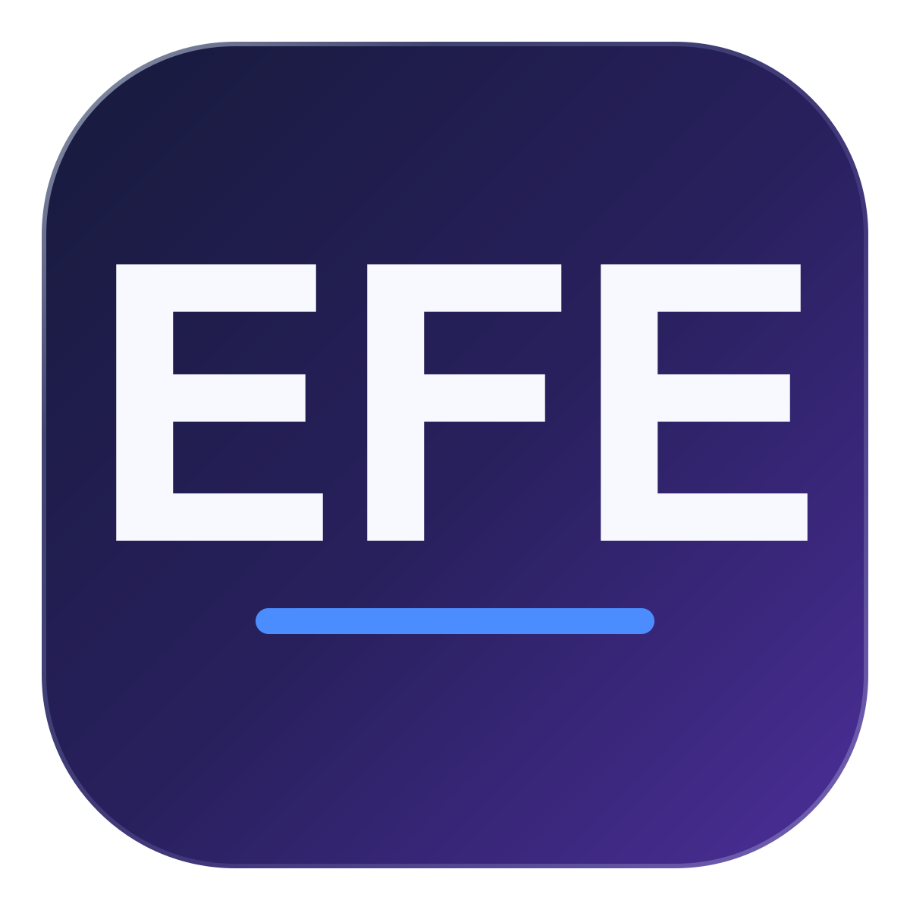

Vivência profissional
O olhar de quem trabalhou com produção gráfica, criação e transformação de imagens ao longo de décadas.
Fabiano Cicala apresenta · Em desenvolvimento
A experiência encontra novas formas de criar. Um novo aplicativo dedicado ao trabalho com imagens. Um projeto pessoal que reúne a experiência de quem acompanhou a transformação da criação gráfica, do início da computação digital às novas possibilidades de hoje.
A história por trás da ideia
Minha trajetória profissional na computação gráfica começou em 1991, quando trabalhei com sistemas de produção gráfica e computadores Apple Macintosh II e IIfx. Era uma época em que criar imagens digitais exigia conhecer de perto cada etapa do processo.
Com o tempo, vieram novos computadores, métodos de criação, tratamento de imagens, produção gráfica e experiências com recursos tridimensionais. A tecnologia mudou muitas vezes. Minha curiosidade pelo processo criativo permaneceu.
O PHOTO EFE nasce dessa vivência. É a vontade de desenvolver uma ferramenta própria para trabalhar com imagens, colocando anos de prática e aprendizado a serviço de uma nova ideia.

O conceito
O olhar de quem trabalhou com produção gráfica, criação e transformação de imagens ao longo de décadas.
O desejo de construir um aplicativo dedicado ao universo das imagens, com identidade e direção próprias.
O PHOTO EFE está em desenvolvimento. Recursos e disponibilidade serão apresentados à medida que forem confirmados.
Em breve
Confira a apresentação inicial do projeto. Esta é uma prévia da proposta visual; o desenvolvimento continua.
O vídeo é ilustrativo e não representa uma promessa de funcionalidades, prazo de lançamento ou disponibilidade comercial.
Um projeto de Fabiano Cicala
O PHOTO EFE ainda está em desenvolvimento. Quando houver novidades verificadas, elas serão apresentadas nos canais oficiais.